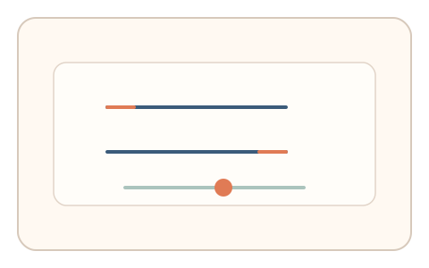
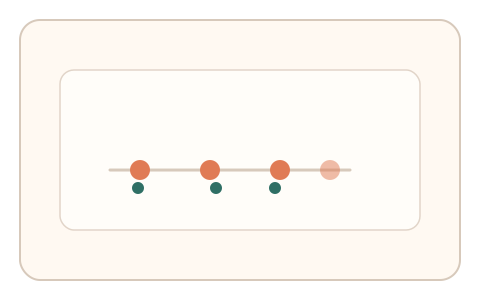
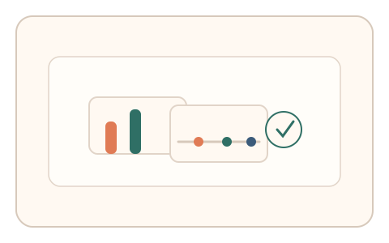

#102
Morphological Analysis - Combination Batches
已扩展
错觉校准‑节律干扰
先校准错觉图形到“看起来对齐”，再跟随节拍点击，以偏差量与节律稳定性组合验证真实性。
概念原文
用户校准错觉图形到“看起来对齐”，随后立即跟随节拍点击，系统比较偏差量与节律稳定性。任务结构为多阶段，信号形态为错觉偏差量与节律序列。
用“错觉偏差 + 节律抖动”构成人类签名。
研究背景
错觉校准会产生稳定的感知偏差，随后节律任务暴露同步抖动。两阶段结合可形成更难伪造的人类签名。
核心机制
- 呈现错觉图形并要求校准到对齐状态。
- 立即进入节拍点击任务。
- 记录错觉偏差量与节律稳定性。
- 做任务内相对比较形成判定。
用户流程
- 步骤 1：用户完成错觉图形校准。
- 步骤 2：用户跟随节拍点击。
- 步骤 3：系统分析偏差与节律并判定。
判定信号
错觉偏差量
人类对错觉的校准存在稳定偏差。
节律抖动
同步点击会出现自然的微波动。
判定逻辑
偏差量与节律抖动需落在人类分布区间；过度稳定或无偏差判异常。
对抗面
- 脚本直接计算对齐并固定节拍
- 重放真实用户的偏差与节拍序列
防御与缓解
- 随机化错觉参数与节拍间隔
- 加入轻微扰动降低模板化
- 叠加反应时与轨迹信号进行多信号判定
可达性与风险
提供更慢节拍与替代任务，避免对注意力或视觉敏感用户造成负担。
- 双阶段任务可能增加疲劳
- 设备延迟影响节拍同步
可视化状态

状态 1：错觉校准
调整错觉图形到主观对齐。

状态 2：节拍点击
随后跟随节拍点击。

状态 3：组合判定
结合偏差与节律判定。
参考资料
Optical illusion
说明错觉偏差与感知规律。
Sensorimotor synchronization
说明节律同步与抖动特征。